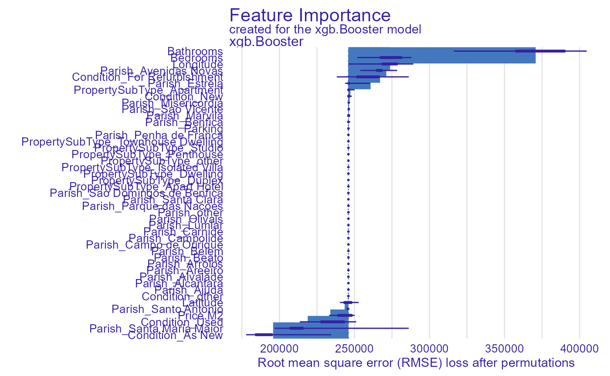
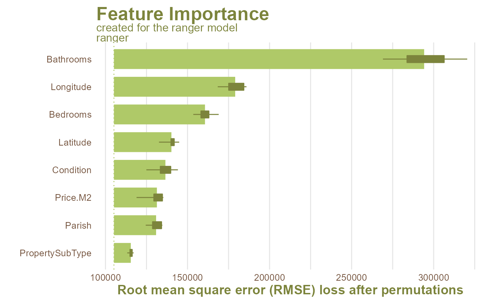

In this short tutorial you will get to know how to use the forester
package. First of all, you don’t need any initial knowledge
to benefit from computational power of the tree-based models, because
forester can do every crucial step for you.
The data set used in our tutorial is called lisbon It
contains 17 columns with both numerical and categorical data about real
estates in Lisbon. Our target here is a Price column and
the task is the regression. The only thing we need to start working with
this task is the forester package, however to explain the
model we will also use DALEX package.
| Id | Condition | PropertyType | PropertySubType | Bedrooms | Bathrooms | AreaNet | AreaGross | Parking | Latitude | Longitude | Country | District | Municipality | Parish | Price.M2 | Price |
|---|---|---|---|---|---|---|---|---|---|---|---|---|---|---|---|---|
| 101 | Used | Homes | Apartment | 3 | 1 | 76 | 152 | 0 | 38.779 | -9.119 | Portugal | Lisboa | Lisboa | Olivais | 2463 | 198000 |
| 102 | Used | Homes | Duplex | 5 | 3 | 190 | 380 | 0 | 38.706 | -9.178 | Portugal | Lisboa | Lisboa | Alcantara | 3125 | 1270000 |
| 103 | Used | Homes | Apartment | 1 | 1 | 26 | 52 | 0 | 38.706 | -9.164 | Portugal | Lisboa | Lisboa | Estrela | 4005 | 140000 |
| 104 | Used | Homes | Apartment | 5 | 4 | 185 | 370 | 0 | 38.747 | -9.164 | Portugal | Lisboa | Lisboa | Sao Domingos de Benfica | 3412 | 995000 |
| 105 | Used | Homes | Apartment | 7 | 1 | 150 | 300 | 0 | 38.732 | -9.129 | Portugal | Lisboa | Lisboa | Arroios | 3277 | 570000 |
| 106 | Used | Homes | Apartment | 3 | 2 | 95 | 190 | 0 | 38.696 | -9.210 | Portugal | Lisboa | Lisboa | Belem | 3542 | 425000 |
| 107 | Used | Homes | Apartment | 3 | 1 | 76 | 152 | 0 | 38.754 | -9.113 | Portugal | Lisboa | Lisboa | Marvila | 2881 | 130000 |
| 108 | Used | Homes | Apartment | 3 | 1 | 81 | 162 | 0 | 38.756 | -9.180 | Portugal | Lisboa | Lisboa | Sao Domingos de Benfica | 3412 | 215000 |
| 109 | Used | Homes | Apartment | 2 | 1 | 58 | 116 | 0 | 38.779 | -9.119 | Portugal | Lisboa | Lisboa | Olivais | 2463 | 196000 |
| 110 | Used | Homes | Apartment | 5 | 3 | 286 | 572 | 0 | 38.763 | -9.169 | Portugal | Lisboa | Lisboa | Lumiar | 2927 | 925000 |
The main function inside the package is train()
function. It needs only two parameters to work: data and
y, which are the data set and target column name. This
method automatically checks the data set for possible issues, fixes the
ones that are needed for models to be built in preprocessing process and
trains the models with basic parameters, randomly searched parameters,
and the ones chosen by Bayesian optimization. It returns an advanced
object, but the most important for casual users is the ranked list of
all trained models sorted from the best one to the worst. Moreover, it
prints out what is currently happening during the whole process.
train_output <- train(lisbon,
'Price',
engine = c('ranger', 'xgboost', 'decision_tree', 'lightgbm'),
bayes_iter = 1,
random_iter = 2,
advanced_preprocessing = TRUE)## Type guessed as: regression
## -------------------- CHECK DATA REPORT --------------------
##
## The dataset has 246 observations and 17 columns, which names are:
## Id; Condition; PropertyType; PropertySubType; Bedrooms; Bathrooms; AreaNet; AreaGross; Parking; Latitude; Longitude; Country; District; Municipality; Parish; Price.M2; Price;
##
## With the target value described by a column Price.
##
## Static columns are:
## Country; District; Municipality;
##
## With dominating values:
## Portugal; Lisboa; Lisboa;
##
## These column pairs are duplicate:
## District - Municipality;
##
## No target values are missing.
##
## No predictor values are missing.
##
## No issues with dimensionality.
##
## Strongly correlated pairs of numerical values are:
##
## Bedrooms - AreaNet: 0.77;
## Bedrooms - AreaGross: 0.77;
## Bathrooms - AreaNet: 0.78;
## Bathrooms - AreaGross: 0.78;
## AreaNet - AreaGross: 1;
##
## Strongly correlated pairs of categorical values are:
## PropertyType - PropertySubType: 1;
##
## These obserwation migth be outliers due to their numerical columns values:
## 145 146 196 44 5 51 57 58 59 60 61 62 63 64 69 75 76 77 78 ;
##
## Target data is not evenly distributed with quantile bins: 0.25 0.35 0.14 0.26
##
## Columns names suggest that some of them are IDs, removing them can improve the model.
## Suspicious columns are: Id .
##
## Columns data suggest that some of them are IDs, removing them can improve the model.
## Suspicious columns are: Id .
##
## -------------------- CHECK DATA REPORT END --------------------
##
## Data preprocessed.
## Data splitted and balanced
## Correct formats prepared
## Models sucsesfully trained
## Predicted Successfully
knitr::kable(train_output$ranked_list, format = 'markdown', digits = 3, format.args = list(big.mark = ',', scientific = FALSE), align = 'c')| engine | mse | rmse | r2 | mad | mae |
|---|---|---|---|---|---|
| ranger_model | 47,298,700,389 | 217,482.6 | 0.656 | 93,555.41 | 147,977.6 |
| ranger_bayes | 47,298,700,389 | 217,482.6 | 0.656 | 93,555.41 | 147,977.6 |
| ranger_RS_1 | 48,639,136,636 | 220,542.8 | 0.646 | 137,218.06 | 162,907.7 |
| ranger_RS_2 | 51,186,994,083 | 226,245.4 | 0.627 | 116,248.97 | 158,544.7 |
| decision_tree_model | 58,321,813,518 | 241,499.1 | 0.575 | 118,318.18 | 177,546.8 |
| decision_tree_RS_1 | 58,321,813,518 | 241,499.1 | 0.575 | 118,318.18 | 177,546.8 |
| decision_tree_RS_2 | 58,321,813,518 | 241,499.1 | 0.575 | 118,318.18 | 177,546.8 |
| decision_tree_bayes | 58,321,813,518 | 241,499.1 | 0.575 | 118,318.18 | 177,546.8 |
| xgboost_model | 60,497,662,450 | 245,962.7 | 0.559 | 58,368.97 | 133,977.5 |
| xgboost_bayes | 60,497,662,450 | 245,962.7 | 0.559 | 58,368.97 | 133,977.5 |
| lightgbm_model | 74,200,602,981 | 272,397.9 | 0.460 | 133,146.67 | 182,202.0 |
| lightgbm_bayes | 74,200,602,981 | 272,397.9 | 0.460 | 133,146.67 | 182,202.0 |
| lightgbm_RS_2 | 77,094,238,657 | 277,658.5 | 0.439 | 112,441.66 | 182,776.0 |
| lightgbm_RS_1 | 85,773,130,834 | 292,870.5 | 0.375 | 168,495.53 | 214,234.1 |
| xgboost_RS_1 | 97,270,575,639 | 311,882.3 | 0.292 | 122,740.69 | 207,121.6 |
| xgboost_RS_2 | 156,497,687,240 | 395,597.9 | -0.140 | 225,860.77 | 295,320.2 |
To access a single model the user has to get to the models_list and
then choose the exact models that interest him. As we want to create a
DALEX explainer and Feature Importance plot, as an example
we will use the first model xgboost, because unfortunately,
we are unable to create this visualization for catboost models yet.
explainer <- forester::explain(models = train_output$best_models$xgboost_model,
test_data = train_output$test_data,
y = train_output$y,
verbose = TRUE)## Explaining a single objectPreparation of a new explainer is initiated
## -> model label : xgb.Booster ( default )
## -> data : 51 rows 45 cols
## -> data : rownames to data was added ( from 1 to 51 )
## -> target variable : 51 values
## -> predict function : yhat.default will be used ( default )
## -> predicted values : No value for predict function target column. ( default )
## -> model_info : package Model of class: xgb.Booster package unrecognized , ver. Unknown , task regression ( default )
## -> predicted values : numerical, min = 153354.1 , mean = 542672.6 , max = 1719992
## -> residual function : difference between y and yhat ( default )
## -> residuals : numerical, min = -1082630 , mean = 350.4553 , max = 959019.9
## A new explainer has been created!
FI <- DALEX::model_parts(explainer)
FI## variable mean_dropout_loss label
## 1 _full_model_ 245962.7 xgb.Booster
## 2 Condition_As New 195781.4 xgb.Booster
## 3 Parish_Santa Maria Maior 218852.1 xgb.Booster
## 4 Condition_Used 233924.0 xgb.Booster
## 5 Price.M2 243458.4 xgb.Booster
## 6 Parish_Santo Antonio 245667.9 xgb.Booster
## 7 Latitude 245895.1 xgb.Booster
## 8 Condition_other 245962.7 xgb.Booster
## 9 Parish_Ajuda 245962.7 xgb.Booster
## 10 Parish_Alcantara 245962.7 xgb.Booster
## 11 Parish_Alvalade 245962.7 xgb.Booster
## 12 Parish_Areeiro 245962.7 xgb.Booster
## 13 Parish_Arroios 245962.7 xgb.Booster
## 14 Parish_Beato 245962.7 xgb.Booster
## 15 Parish_Belem 245962.7 xgb.Booster
## 16 Parish_Campo de Ourique 245962.7 xgb.Booster
## 17 Parish_Campolide 245962.7 xgb.Booster
## 18 Parish_Carnide 245962.7 xgb.Booster
## 19 Parish_Lumiar 245962.7 xgb.Booster
## 20 Parish_Olivais 245962.7 xgb.Booster
## 21 Parish_other 245962.7 xgb.Booster
## 22 Parish_Parque das Nacoes 245962.7 xgb.Booster
## 23 Parish_Santa Clara 245962.7 xgb.Booster
## 24 Parish_Sao Domingos de Benfica 245962.7 xgb.Booster
## 25 PropertySubType_Apart Hotel 245962.7 xgb.Booster
## 26 PropertySubType_Duplex 245962.7 xgb.Booster
## 27 PropertySubType_Dwelling 245962.7 xgb.Booster
## 28 PropertySubType_Isolated Villa 245962.7 xgb.Booster
## 29 PropertySubType_other 245962.7 xgb.Booster
## 30 PropertySubType_Penthouse 245962.7 xgb.Booster
## 31 PropertySubType_Studio 245962.7 xgb.Booster
## 32 PropertySubType_Townhouse Dwelling 245962.7 xgb.Booster
## 33 Parish_Penha de Franca 245993.9 xgb.Booster
## 34 Parking 246006.0 xgb.Booster
## 35 Parish_Benfica 246039.0 xgb.Booster
## 36 Parish_Marvila 246156.5 xgb.Booster
## 37 Parish_Sao Vicente 246160.2 xgb.Booster
## 38 Parish_Misericordia 246211.1 xgb.Booster
## 39 Condition_New 246403.5 xgb.Booster
## 40 PropertySubType_Apartment 246786.4 xgb.Booster
## 41 Parish_Estrela 247317.8 xgb.Booster
## 42 Condition_For Refurbishment 260752.4 xgb.Booster
## 43 Parish_Avenidas Novas 267075.5 xgb.Booster
## 44 Longitude 271223.9 xgb.Booster
## 45 Bedrooms 273806.1 xgb.Booster
## 46 Bathrooms 370776.1 xgb.Booster
## 47 _baseline_ 488888.1 xgb.Booster
plot(FI)
However, this visualization is barely a basic one. To get the FI plot
for the best model trained, one can use the
draw_feature_importance function.
draw_feature_importance(train_output$best_models, train_output$train_data, train_output$y)## Scale for 'colour' is already present. Adding another scale for 'colour',
## which will replace the existing scale.
From the above visualization, we can see that the most important
variables for the xgboost model were
Bathrooms, Latitude, and
Longitude.
The aforementioned visualizations, like many others, are also
available in ready-to-go reports implemented in the report
function.
report(train_output, 'regression.pdf')## processing file: report.Rmd## Warning in storage.mode(data) <- "double": NAs introduced by coercion
## Warning in storage.mode(data) <- "double": NAs introduced by coercion
## Warning in storage.mode(data) <- "double": NAs introduced by coercion
## Warning in storage.mode(data) <- "double": NAs introduced by coercion
## Warning in storage.mode(data) <- "double": NAs introduced by coercion
## Warning in storage.mode(data) <- "double": NAs introduced by coercion
## Warning in storage.mode(data) <- "double": NAs introduced by coercion
## Warning in storage.mode(data) <- "double": NAs introduced by coercion## Coordinate system already present. Adding new coordinate system, which will replace the existing one.## Scale for 'colour' is already present. Adding another scale for 'colour',
## which will replace the existing scale.## Warning: Number of logged events: 4## output file: report.knit.md## "C:/Program Files/RStudio/bin/quarto/bin/tools/pandoc" +RTS -K512m -RTS report.knit.md --to latex --from markdown+autolink_bare_uris+tex_math_single_backslash --output pandoc1ab46632779d.tex --lua-filter "C:\Users\AnnA\AppData\Local\R\win-library\4.2\rmarkdown\rmarkdown\lua\pagebreak.lua" --lua-filter "C:\Users\AnnA\AppData\Local\R\win-library\4.2\rmarkdown\rmarkdown\lua\latex-div.lua" --self-contained --highlight-style tango --pdf-engine pdflatex --variable graphics --variable "geometry:margin=1in"##
## Output created: regression.pdf